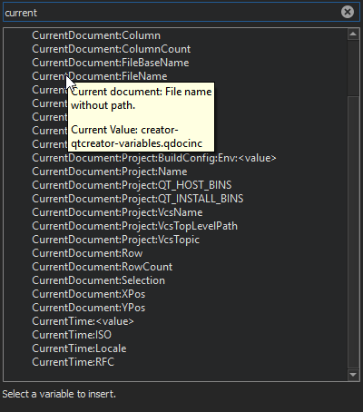

Use Qt Creator variables
You can use Qt Creator variables in Preferences, Build Settings, and Run Settings, in fields that set arguments, executable paths, and working directories, for example. The variables take care of quoting their expansions, so you do not need to put them in quotes.
Select the  (Variables) button in a field to select from a list of variables that are available in a particular context. For more information about each variable, move the cursor over it in the list.
(Variables) button in a field to select from a list of variables that are available in a particular context. For more information about each variable, move the cursor over it in the list.

The following syntax enables you to use environment variables as Qt Creator variables: %{Env:VARNAME}.
Qt Creator uses pattern substitution when expanding variable names. To replace the first match of pattern within variable with replacement, use:
%{variable/pattern/replacement}
To replace all matches of pattern within variable with replacement, use:
%{variable//pattern/replacement}
The pattern can be a regular expression and the replacement can have backreferences. For example, if %{variable} is my123var, then %{variable/(..)(\d+)/\2\1} is expanded to 123myvar.
Instead of the forward slash, you can also use the number sign (#) as the substitution character. This can be helpful if the value is supposed to be a file path, in which case forward slashes might get translated to backslashes on Windows hosts.
To use the default value if the variable is not set, use:
%{variable:-default}
See also Specify the environment for projects, Configure projects for building, and Configure projects for running.